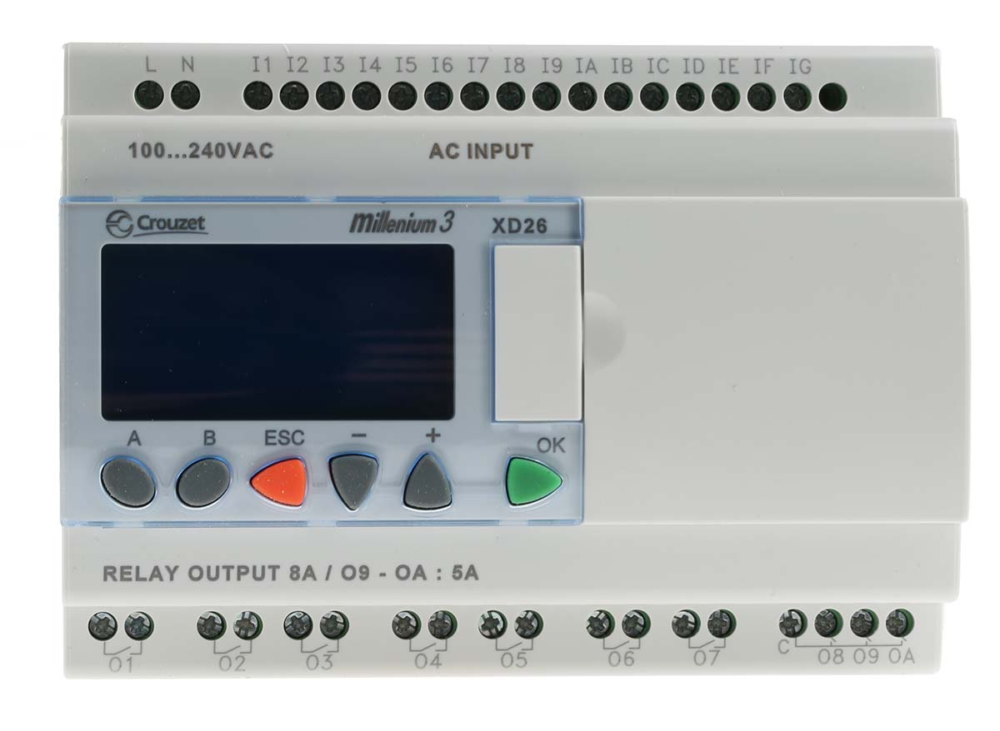
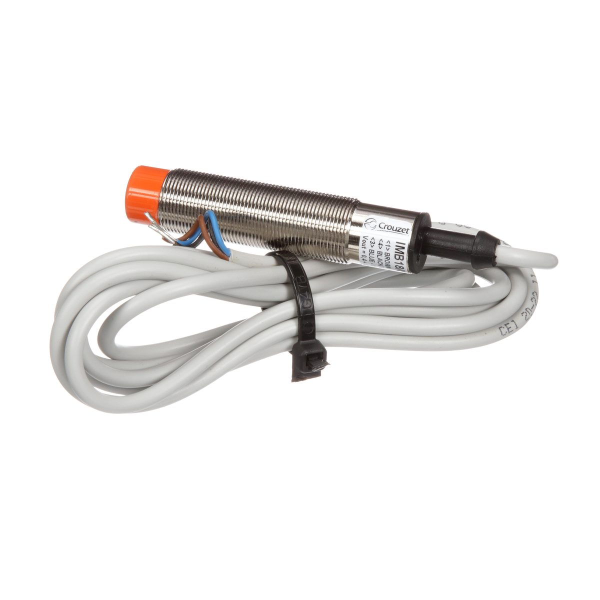
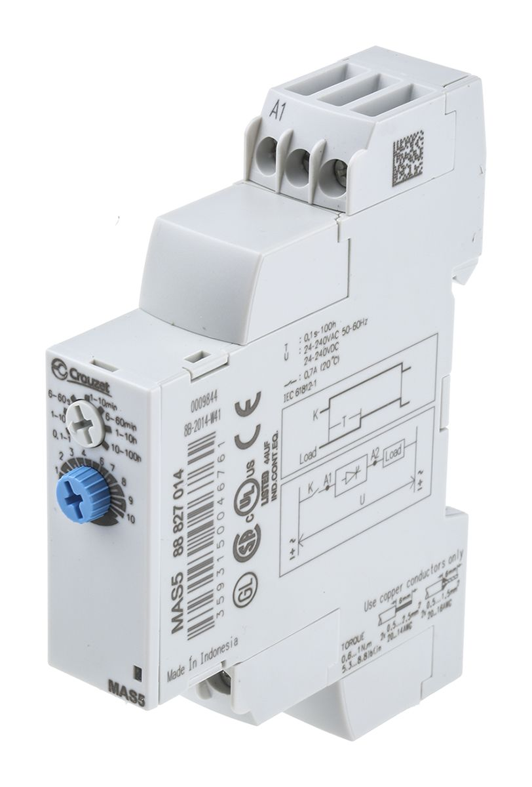
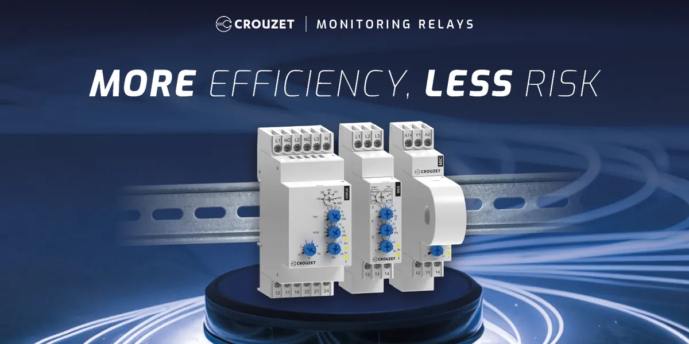

Xuất xứ: Pháp
Crouzet là thương hiệu Pháp chuyên về linh kiện cơ điện tử và tự động hoá: bộ điều khiển lập trình nano-PLC, rơ le thời gian, rơ le bán dẫn, công tắc hành trình, thiết bị khí nén, động cơ và thiết bị bảo vệ mạch — nhóm linh kiện được chọn khi ứng dụng đòi hỏi độ tin cậy cao hơn mức công nghiệp thông thường.
Fast Group là đại lý phân phối Crouzet chính hãng tại Việt Nam — tư vấn chọn đúng model theo điện áp, chức năng và chuẩn kết nối, cung cấp datasheet, báo giá theo part number kèm CO, CQ và hoá đơn VAT, giao hàng toàn quốc cho nhà máy, OEM, dự án và công tác bảo trì.
Fast Group vận hành website chuyên ngành riêng cho thương hiệu này: tra cứu 1.033 part number Crouzet chia theo 18 nhóm sản phẩm — mỗi mã có trang riêng kèm thông số và nút tải datasheet.
Tra cứu thêm thông số & mã hàng: crouzet.vn
Crouzet được Édouard Crouzet sáng lập năm 1921 tại vùng Valence (Pháp). Đến cuối năm 1932, công ty đã có khoảng một trăm nhân viên; năm 1966 hình thành mảng linh kiện tự động hoá và trở thành Crouzet Automatismes. Với hơn 100 năm lịch sử, Crouzet là tên tuổi giàu kinh nghiệm trong lĩnh vực cơ điện tử.
Ngày nay Crouzet là nhà sản xuất độc lập chuyên về linh kiện cơ điện tử cho các ứng dụng đòi hỏi cao trong hàng không - quốc phòng, công nghiệp, giao thông và năng lượng - hạ tầng. Danh mục gồm công tắc và cảm biến vị trí, bộ truyền động cơ điện, thiết bị bảo vệ điện, bộ điều khiển tự động hoá và rơ le.
Điểm khiến Crouzet khác với phần lớn nhà sản xuất linh kiện tự động hoá phổ thông nằm ở gốc hàng không - quốc phòng. Một phần lớn danh mục của hãng được thiết kế theo tiêu chuẩn ngành bay — công tắc hàn kín khí, thiết bị bảo vệ mạch theo chuẩn quân sự — rồi mới đưa sang ứng dụng công nghiệp. Đó là lý do nhiều model Crouzet có thông số môi trường và độ tin cậy vượt xa mức cần thiết cho một tủ điện thông thường, và cũng là lý do chúng được chọn cho những vị trí không được phép hỏng.
Danh mục Crouzet trải rộng từ linh kiện tủ điện thông dụng đến thiết bị chuẩn hàng không. Bảng dưới liệt kê các nhóm chính Fast Group cung ứng tại Việt Nam kèm số lượng model đang có dữ liệu trên website chuyên ngành — hữu ích khi bạn cần ước lượng độ phủ trước khi gửi danh sách hỏi giá.
| Nhóm sản phẩm | Dòng tiêu biểu | Đặc điểm chính | Số model | Ứng dụng điển hình |
|---|---|---|---|---|
| Thiết bị bảo vệ mạch (CB) | Điện cơ & bán dẫn, 1–3 cực, AFCB | Chuẩn hàng không / quân sự AS33201, MS3320, VG95345; bản AFCB chống hồ quang | 513 | Thiết bị bay, quốc phòng, hệ thống điện đặc thù |
| Thiết bị khí nén | Van tay, van điện từ, logic khí nén, công tắc áp suất | Nhiều phiên bản ATEX; có cảm biến vị trí và van đa lưu chất | 134 | Mạch điều khiển khí nén, vùng nguy hiểm |
| Công tắc hành trình | Limit switch thân kim loại & nhựa | Nhiều kiểu vỏ, cần tác động và kiểu đấu nối; bản hàn kín khí | 131 | Máy móc, robot, thiết bị nâng hạ, môi trường khắc nghiệt |
| Bộ đếm & đồng hồ | Counter, hour meter, timer hiển thị | Đếm xung, đếm giờ vận hành, định thời chu trình | 72 | Giám sát sản lượng, bảo trì theo giờ chạy |
| Microswitch | Công tắc hành trình cỡ nhỏ | Độ bền cơ khí cao, độ lặp lại vị trí tốt | 49 | Cơ cấu nhỏ, thiết bị OEM, phát hiện vị trí chính xác |
| Rơ le bán dẫn (SSR) | GN · GNA · GNR · GNP | Đơn pha, 3 pha và DC; đóng cắt Zero Cross, không tiếp điểm cơ khí | 20 | Tải nhiệt, tải động cơ, chu trình đóng cắt dày |
| Rơ le giám sát | Monitoring relay | Giám sát điện áp, mất pha, thứ tự pha | 19 | Bảo vệ tủ động lực và dây chuyền sản xuất |
| Cảm biến lực GAROS | Bending · Compression · Load pin · Extensometer | Đo lực theo nhiều nguyên lý lắp đặt | 19 | Đo tải, giám sát lực trong thiết bị chuyên dụng |
| Rơ le thời gian | Plug-in 8/11 chân · DIN Rail Syr-Line · Panel TMR48 | Đa chức năng: on-delay, off-delay, repeat cycle trong cùng một thiết bị | 14 | Tủ điều khiển, chu trình máy, khởi động tuần tự |
| Rơ le kín khí | Dòng 303–336 | Vỏ hàn kín, chịu môi trường khắc nghiệt | 12 | Hàng không, quốc phòng, thiết bị ngoài trời |
| Màn hình HMI & nút nhấn | HMI, giao diện người-máy | Hiển thị và điều khiển tại chỗ | 11 | Giám sát, thu thập dữ liệu trong nhà máy |
| Động cơ & hộp số | DC brush Ø32/42/63, Hall SQ57, stepper, gearmotor | Chuyển động chính xác, nhiều cỡ đường kính thân | 15 | Thiết bị OEM, van điều khiển, thiết bị y tế |
| Bộ điều khiển lập trình | Millenium 4 · em4 Nano-PLC · Millenium 3 | Nền 12 I/O mở rộng tới 60 I/O, tuỳ chọn màn hình ba màu, Ethernet/Modbus, datalogging và thẻ nhớ | 16 | Tự động hoá máy đơn, dây chuyền nhỏ, telecontrol |
| Cảm biến tiệm cận | Inductive · magnetic · hermetic · sealed | Nhiều nguyên lý và cấp bảo vệ | 4 | Phát hiện vật thể, xác nhận vị trí cơ cấu |
| Cơ cấu chấp hành EMA & bộ nguồn | Flight control 28 VDC · utility 28 VDC · power supplies | Bộ truyền động cơ điện chuyên dụng, thiết kế theo yêu cầu | 4 | Điều khiển bay, thiết bị đặc chủng |
Tổng cộng 1.033 part number đang có trang dữ liệu riêng, chia theo 18 nhóm.
Ba nhóm được hỏi giá nhiều nhất tại Việt Nam: bộ điều khiển lập trình Millenium và các biến thể nguồn cấp, 134 model thiết bị khí nén gồm van tay, van điện từ và công tắc áp suất, và hơn 500 model thiết bị bảo vệ mạch chuẩn hàng không và quân sự.
Dưới đây là ba mã đại diện cho ba nhóm khác nhau, kèm đường dẫn tới trang thông số chi tiết. Nếu mã bạn cần không nằm trong số này, gửi part number hoặc ảnh nhãn — chúng tôi đối chiếu trong toàn bộ danh mục.
Rơ le bán dẫn 25 A, điện áp tải 20–265 V AC, lắp thanh DIN, đóng cắt Zero Cross. Dùng cho tải nhiệt và chu trình đóng cắt dày nơi tiếp điểm cơ khí mòn nhanh. Xem thông số chi tiết mã 84137010N.
Dòng Panel Mount TMR48 Digital Essential MDA2, hai ngõ ra, lắp mặt tủ cỡ 48×48. Phù hợp khi cần đặt thời gian trực tiếp trên cánh tủ thay vì trong ray DIN. Xem thông số rơ le thời gian MDA2R10MV2.
Basic cell không phụ kiện, đạt RTCA DO-160E, hàn kín nitrogen với độ rò dưới 1×10⁻⁸ Pa; dải dòng 1 mA–7 A thuần trở. Đại diện cho nhóm linh kiện gốc hàng không của Crouzet. Xem thông số công tắc 83151001.
Với rơ le và bộ điều khiển, đây là hai đại lượng tách biệt và hay bị gộp nhầm. Rơ le bán dẫn có dải điện áp điều khiển ở đầu vào (thường 3–32 V DC hoặc 90–280 V AC) và dải điện áp tải ở đầu ra (ví dụ 20–265 V AC). Đặt nhầm một trong hai là mã sai hoàn toàn, không sửa được bằng đấu nối. Với nano-PLC, nguồn cấp 12–24 V DC và bản 100–240 V AC là hai mã riêng.
Chọn SSR khi tải đóng cắt liên tục với tần suất cao — điện trở nhiệt, lò sấy, chu trình điều khiển nhiệt độ — vì không có tiếp điểm cơ khí nên không mòn và không phát hồ quang. Đổi lại, SSR sinh nhiệt khi dẫn và bắt buộc phải tính tản nhiệt: gắn lên tấm tản nhiệt đủ diện tích, chừa khoảng hở trong tủ. Bỏ qua bước này là nguyên nhân số một khiến SSR hỏng sớm. Rơ le tiếp điểm vẫn hợp lý hơn cho tải đóng cắt thưa và dòng lớn.
Nano-PLC Millenium và em4 khởi điểm ở cấu hình 12 I/O và mở rộng được tới 60 I/O bằng module. Nên cộng dự phòng ngay từ đầu thay vì chọn sát nhu cầu: chi phí chênh lệch nhỏ hơn nhiều so với việc phải thay bộ điều khiển khi máy được bổ sung chức năng. Cũng cần chốt sớm có dùng ngõ vào analog, có cần màn hình tích hợp và có cần truyền thông Ethernet/Modbus hay không — ba yếu tố này tạo ra các mã khác nhau trong cùng một dòng.
Đây là nơi danh mục Crouzet phân hoá mạnh. Cùng một chức năng công tắc hành trình, hãng có bản nhựa thông thường cho tủ trong nhà và bản hàn kín khí đạt chuẩn hàng không cho môi trường rung, ẩm, hoá chất hoặc nhiệt độ cực trị. Nếu vị trí lắp thực sự khắc nghiệt, nêu rõ điều kiện trong RFQ — chọn đúng ngay từ đầu rẻ hơn nhiều so với thay linh kiện hỏng lặp lại trên dây chuyền đang chạy.
Các model thông dụng trong nhóm rơ le, bộ đếm và công tắc hành trình thường luân chuyển nhanh. Nhóm bộ điều khiển lập trình và các cấu hình đặc thù — bản ATEX, bản hàn kín khí, thiết bị bảo vệ mạch chuẩn hàng không — cần đặt theo lô sản xuất tại Pháp, thời gian dài hơn đáng kể.
Với dự án có mốc tiến độ cố định, nên gửi toàn bộ danh mục một lần để Fast Group tách nhóm hàng sẵn và hàng đặt, tránh cả đơn phải chờ theo mã dài nhất. Fast Group xử lý trọn gói khâu nhập khẩu và thông quan — xem chi tiết dịch vụ nhập khẩu & logistics và hỗ trợ kỹ thuật sau bán hàng.




Đúng. Fast Group là đại lý phân phối Crouzet chính hãng tại Việt Nam, cung cấp hàng nhập khẩu rõ nguồn gốc kèm CO, CQ và hoá đơn VAT, cùng thư xác nhận đại lý khi hồ sơ thầu yêu cầu. Chúng tôi cũng vận hành website chuyên ngành crouzet.vn để hỗ trợ tra cứu part number và thông số trước khi gửi yêu cầu báo giá.
Cả hai đều là nano-PLC lập trình bằng sơ đồ chức năng, cùng nền 12 I/O mở rộng tới 60 I/O. Millenium 4 là thế hệ mới với tuỳ chọn màn hình ba màu, truyền thông Ethernet/Modbus, datalogging và thẻ nhớ; em4 nghiêng về cấu hình gọn và có bản telecontroller cho ứng dụng giám sát từ xa. Chọn theo nhu cầu hiển thị, truyền thông và số I/O thực tế.
Có, và đây là lỗi lắp đặt phổ biến nhất với SSR. Khi dẫn dòng, SSR sinh nhiệt đáng kể; thiếu tản nhiệt hoặc lắp trong tủ kín không thoáng sẽ khiến nhiệt độ mối nối vượt ngưỡng và hỏng sớm. Hãy gắn lên tấm tản nhiệt đủ diện tích theo dòng tải thực tế và chừa khoảng hở xung quanh khi lắp nhiều con cạnh nhau.
Vì part number Crouzet mã hoá luôn điện áp, cấu hình ngõ ra, kiểu lắp và tuỳ chọn hiển thị. Ví dụ trong nhóm rơ le thời gian, cùng một chức năng định thời có bản plug-in 8 chân, bản 11 chân, bản DIN Rail và bản panel mount cỡ 48×48 — bốn mã khác nhau. Do đó khi hỏi giá nên gửi mã đầy đủ hoặc mô tả đủ bốn yếu tố: chức năng, điện áp, kiểu lắp, kiểu ngõ ra.
Được. Gửi ảnh chụp nhãn hoặc phần mã còn đọc được, kèm mô tả vị trí lắp và chức năng thiết bị đang đảm nhiệm. Fast Group đối chiếu trong toàn bộ danh mục và đề xuất mã tương đương, kèm cảnh báo nếu dòng cũ đã ngừng sản xuất và cần chuyển sang thế hệ mới.
Tuỳ nhóm. Rơ le, bộ đếm và công tắc hành trình thông dụng luân chuyển nhanh; bộ điều khiển lập trình và các cấu hình đặc thù như bản ATEX, bản hàn kín khí hay thiết bị bảo vệ mạch chuẩn hàng không cần đặt theo lô sản xuất tại Pháp. Gửi danh mục sớm để chúng tôi tách nhóm và xác nhận thời gian cho từng phần. Liên hệ qua trang liên hệ hoặc gọi (+84) 938 888 958.
Gửi part number hoặc mô tả nhu cầu — Fast Group hỗ trợ kiểm tra mã, báo giá, nhập khẩu, chứng từ và xử lý đơn hàng nhanh.